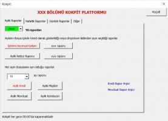
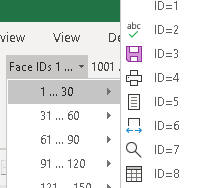
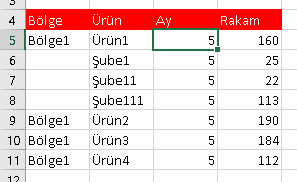

Also on Excelinefendisi

Giris DosyaUzantilari
Sitem Excel,VBA,Makro,VSTO konularında ileri seviyede bilgi hizmeti sunmaktadır.
DebuggingveHataYonetimi Breakpointler
Sitem Excel,VBA,Makro,VSTO konularında ileri seviyede bilgi hizmeti sunmaktadır.

Formlar Kontroller
Sitem Excel,VBA,Makro,VSTO konularında ileri seviyede bilgi hizmeti sunmaktadır.

Add-in yaratmak
Sitem Excel,VBA,Makro,VSTO konularında ileri seviyede bilgi hizmeti sunmaktadır.
Webden veri çekme
Sitem Excel,VBA,Makro,VSTO konularında ileri seviyede bilgi hizmeti sunmaktadır.
ExcelinEfendisi (Türkçe Excel, VBA, Makro, VSTO bilgi kaynağı)
Sitem Excel,VBA,Makro,VSTO konularında ileri seviyede bilgi hizmeti sunmaktadır.
DortTemelNesne Worksheet
Sitem Excel,VBA,Makro,VSTO konularında ileri seviyede bilgi hizmeti sunmaktadır.

VeriTabanı İşlemleri
Sitem Excel,VBA,Makro,VSTO konularında ileri seviyede bilgi hizmeti sunmaktadır.